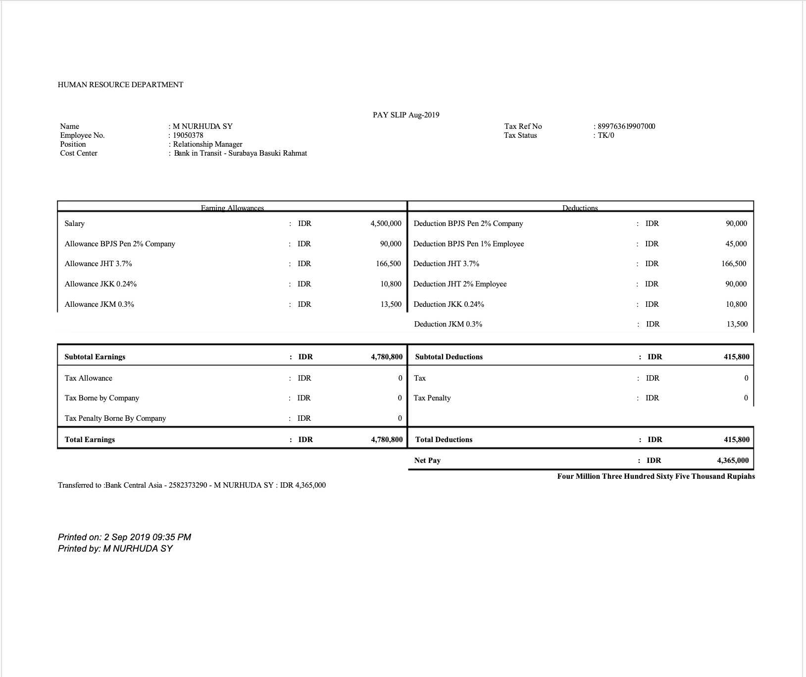
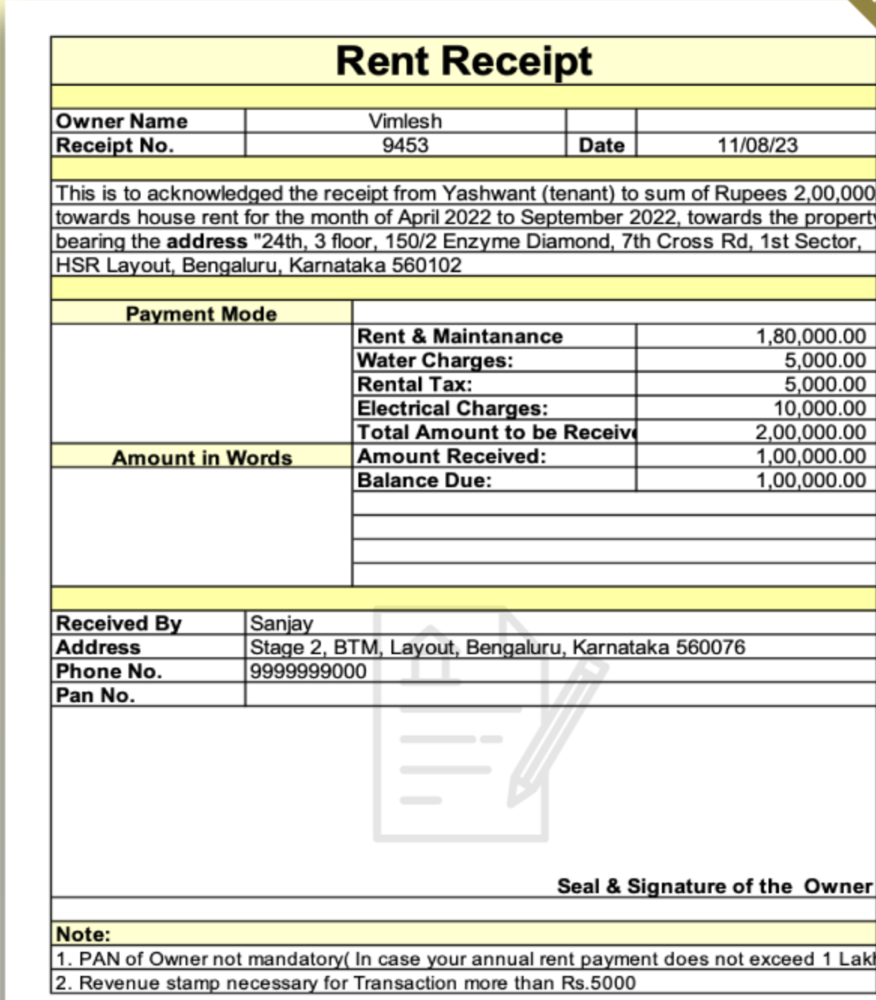

Buy or Wait?
For cash flow

When certainty and cash flow collide, the answer is verifiable — safe, private, and local.
Services
Open source, open wallet
01
MIT licensed
Every line, prompt and financial rule is public. Audit the engine before you trust it with a budget.
02
Zero-cost AI
Open-weight models run on your own machine through Ollama. No API bills, no subscription, no per-question fee.
03
Runs on a normal laptop
Built for ordinary hardware and ordinary budgets — CPU-friendly models, no GPU required, works offline.
04
Your money stays yours
Financial data never leaves the device. Privacy that used to belong to the wealthy, available to everyone.
